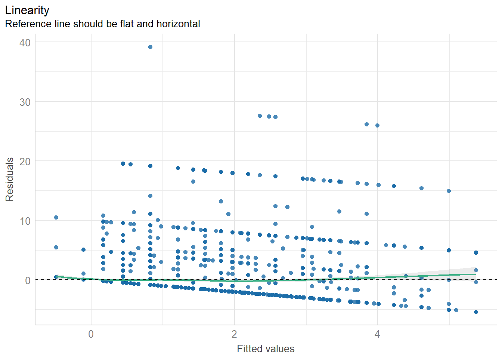
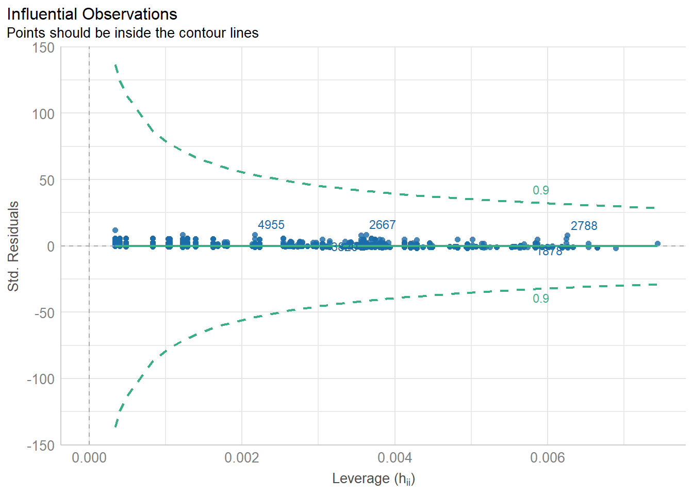

library(emoji)
library(emoji)
library(dplyr)
library(gt)
library(gtsummary)
library(officer)
library(flextable)
library(ppcor)
library(ggcorrplot)
library(fastDummies)
library(emmeans)
library(gtsummary)
library(flextable)
library(performance)Assignment 1
This assignment uses the PRAMS data file that is fully described here
Install libraries
The assignment assumes the following packages have been installed:
Objective
The purpose of this assignment is to explore the assumptions of a linear regression model using some familiar and new packages in R. Specifically, the performance package, performs diagnostics simply and quickly, and interprets the results for you. This is efficient and quite remarkable. No more fiddling around in the outdated paleolithic software program SPSS. Additionally, you will document your findings in a structured report, including descriptive statistics, assumption checks, and results. The write up of the results should follow a specific format.
1. Data Preparation and Descriptive Statistics
1.1 Load and Clean the Data
data <- read.csv("C:/Users/barboza-salerno.1/Downloads/KSPRAMS_SUB_WEIGHT_ANALYSIS.csv")
# Selecting relevant variables
data <- data %>% dplyr::select(CIG_1TRI, BPG_DEPRS8, Any_Abuse, ACEs_Scale, Race_Ethnicity) Before removing the missing data, let’s get a sense of the missingness across race & ethnicity. What is the distribution of missing respondents by race? Are there any implications?
# Select only rows with missing data
df_missing <- data[!complete.cases(data), ]
df_missing |> tbl_summary(include = c(Race_Ethnicity))1.2 Missing Data Analysis
How many cases are missing? Calculate the number of omitted cases due to missing values:
data <- data %>% na.omit()
num_omitted <- nrow(read.csv("C:/Users/barboza-salerno.1/Downloads/KSPRAMS_SUB_WEIGHT_ANALYSIS.csv")) - nrow(data)
cat("Number of omitted cases:", num_omitted, "\n")2. Correlation Analysis
2.2 Why are we using Spearman and not Pearson Correlaion?
2.3 What variable changes the least after partialing out the other variables?
# Compute correlation matrix
cor_matrix <- cor(data %>% dplyr::select(CIG_1TRI, BPG_DEPRS8, Any_Abuse, ACEs_Scale), use = "complete.obs", method = "spearman")
ggplot_correlation <- ggcorrplot(cor_matrix, lab = TRUE, title = "Correlation Matrix")
print(ggplot_correlation)
print(cor_matrix)
# Compute partial correlations
partial_corrs <- pcor(data %>% dplyr::select(CIG_1TRI, BPG_DEPRS8, Any_Abuse, ACEs_Scale))
print(partial_corrs)3. Creating Dummy Variables for Categorical Data
3.1 Frequency of Race/Ethnicity Categories
What is the distribution by race?
table(data$Race_Ethnicity)3.2 Creating Dummy Variables
Race/Ethnicity is categorical. We need to create dummies to include them into the model. The best way to do this is by using fastDummies. Follow this below. Describe exactly what this line of code is doing, word by word.
data <- dummy_cols(data, select_columns = "Race_Ethnicity", remove_first_dummy = TRUE)Explanation: This function converts categorical Race_Ethnicity into binary variables while removing the first level as a reference category.
3.3 Re-leveling Race/Ethnicity
Sometimes its nice to re-level the variable. The original variable distribution is given above.
data$Race_Ethnicity <- relevel(factor(data$Race_Ethnicity), ref = "NH White")This reorders the levels so that “NH White” is the reference category in our regression model.
data <- dummy_cols(data, select_columns = "Race_Ethnicity", remove_first_dummy = TRUE)4. Running Regression Models
We are predicting cigartette use during pregnancy by whether the pregnant person experienced any abuse during pregnancy, ACEs, is depressed (BPG_DEPRS8), and by race/ethnicity. Fit progressively more complex models: starting with Any_Abuse, etc…
model0 <- lm(CIG_1TRI ~ Any_Abuse, data = data)
model1 <- lm(CIG_1TRI ~ Any_Abuse + ACEs_Scale, data = data)
model2 <- lm(CIG_1TRI ~ Any_Abuse + ACEs_Scale + BPG_DEPRS8, data = data)
model3 <- lm(CIG_1TRI ~ Any_Abuse + ACEs_Scale + BPG_DEPRS8 + Race_Ethnicity_Hispanic + `Race_Ethnicity_NH Black` + Race_Ethnicity_Other, data = data)
summary(model3)What variable is omitted, and why? How much more of the variance is explained by ACEs_Scale, BPG_DEPRS8, and Race_Ethnicity compared to just Any_Abuse?
5. Model Diagnostics
The performance package is a very cool package in R. It facilitates model diagnostics. Then, plots it. Follow along.
5.1 Checking Assumptions
check_collinearity(model3)
check_heteroscedasticity(model3)
check_normality(model3)
check_outliers(model3)5.2 Visualizing Diagnostic Plots
diagnostic_plots <- plot(check_model(model3, panel = FALSE))
# Display plots
print(diagnostic_plots[[2]]) # Q-Q plot
print(diagnostic_plots[[3]]) # Residuals vs Fitted plot
print(diagnostic_plots[[4]]) # Scale-location plot
print(diagnostic_plots[[5]]) # Cook’s distance
6. Post-Hoc Analysis Using Estimated Marginal Means (EMMs)
The emmeans package allows us to predict cigarette use by any variable, here race/ethnicity. Then, we can use the confint to get confidence intervals.
emm <- emmeans(model3, pairwise ~ Race_Ethnicity_Hispanic)
print(emm)
confint(emm, level = 0.95)7. Saving Results to a Word Document
Create a structured report including tables and regression results:
data %>%
dplyr::select(CIG_1TRI, BPG_DEPRS8, Any_Abuse, ACEs_Scale, Race_Ethnicity) %>%
tbl_summary(include = c(CIG_1TRI, BPG_DEPRS8, Any_Abuse, ACEs_Scale, Race_Ethnicity)) %>%
as_flex_table() %>%
print()doc <- read_docx()
doc1 <- doc %>%
body_add_par("Descriptive Statistics", style = "heading 1") %>%
body_add_flextable(
data %>%
dplyr::select(CIG_1TRI, BPG_DEPRS8, Any_Abuse, ACEs_Scale, Race_Ethnicity) %>%
tbl_summary(
type = all_continuous() ~ "continuous2",
statistic = all_continuous() ~ c(
"{N_nonmiss}",
"{median} ({p25}, {p75})",
"{min}, {max}"
),
missing = "no"
) %>%
as_flex_table()
) %>%
body_add_par("Regression Model Summary", style = "heading 1") %>%
body_add_flextable(
tbl_regression(model3) %>% # Corrected function placement
add_global_p() %>%
as_flex_table()
) %>%
body_add_par("Correlation Analysis", style = "heading 1") %>%
body_add_gg(ggplot_correlation)
print(doc1, target = "C:/Users/barboza-salerno.1/Downloads/Regression_Report_FINAL.docx")7. Write-Up Guidelines
Write a report that includes:
- Introduction: Briefly describe the purpose of the analysis.
- Data Description: Briefly explain the data set and key variables used, including how they were coded and re-coded as applicable.
- Statistical Analysis: Describe the analytic approach taken. This includes descriptive statistics, regression analysis, diagnostic assessment, and marginal means.
- Descriptive Statistics: Present summary statistics and missing data analysis (Table 1 in Word). Correlation analysis (Figure 1).
- Regression Models: Interpret key findings from each model. Describe how the models change. Present final model (Table 2 in Word).
- Model Assumption Checks: Discuss the model’s validity based on assumption checks. Include plots as appendix.
- Post-Hoc Analysis: Interpret estimated marginal means. Create a table of the estimated marginal means for smoking by Race/Ethnicity (By hand - Table 3).
- Conclusion: Summarize key insights and possible limitations. Suggest two policy recommendations for addressing smoking during pregnancy.
Submission Instructions:
- Submit both the
.Rscript and the Word document. - Ensure all tables and plots are properly formatted.
- Assignment due by email by end of Week 9.
Grading Criteria:
| Section | Points |
|---|---|
| Data Cleaning & Preparation | 20 |
| Descriptive Statistics | 20 |
| Regression Models | 20 |
| Model Diagnostics | 20 |
| Write-Up & Interpretation | 20 |
| Total | 100 |
Good luck with your analysis!
See my sample write-up